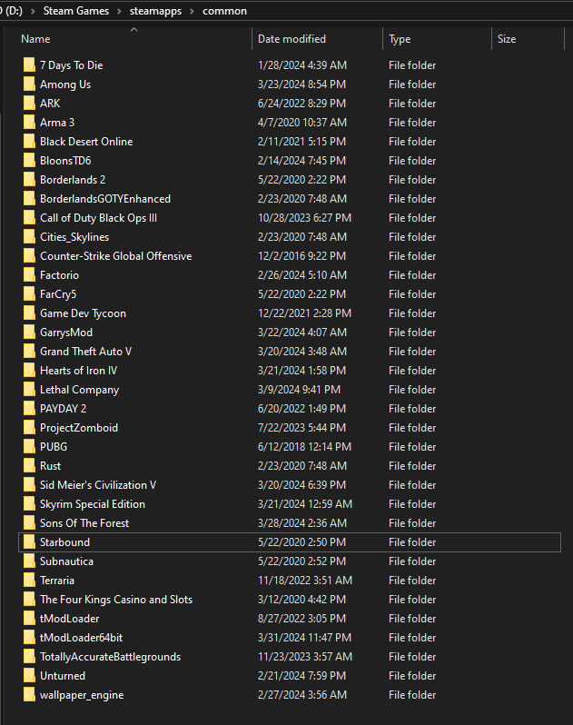

3. Once extracted, open your steamapps/common folder and drag the extracted "tModLoader64bit" into the common folder

To open your steamapps/common folder simply right click on Terraria on Steam go to Manage > Browse Local Files, then go back one folder to get to common
You can then pin the executable "tModLoader64bit.exe" to your desktop and start 64bit tModLoader 1.3 from there